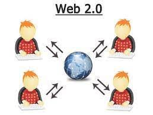

Web 2.0 is the second generation of the World Wide Web, characterized by interactive and user-generated content, social networking, and collaboration. Unlike the static nature of Web 1.0, Web 2.0 empowers users to actively participate, create, and share content through dynamic platforms such as blogs, wikis, and social media.
